Released on July 9, 2008
(Next Release on July 16, 2008)
Jet Fuel Markets are Losing Altitude
Jet fuel consumption is being buffeted by rising fuel costs. Following the terrorist attacks of 2001, commercial jet fuel markets had been making progress in recovering lost altitude. However, jet fuel consumption leveled off in late 2005, as jet fuel prices took off. Figure 1 shows commercial jet-fuel prices and purchases since 1998 as well as the projections as presented in the most recent EIA Short-Term Energy Outlook (STEO).

In response to the rapid increase in jet fuel prices, several U.S. airlines have announced reductions in domestic capacity to be implemented later this year. Table 1 summarizes these reductions (including those for regional affiliates) and the estimated impacts on commercial jet fuel demand, based on actual 2007 fuel purchases. These carriers represent 61 percent of industry-wide available seat miles and 52 percent of total available capacity, which includes freight and mail. Estimates of fuel consumption reductions are based on the most recent announcements and are subject to revisions between now and the end of the summer season. These estimates assume that the oldest (i.e. the least fuel-efficient) aircraft will be retired, and that the consumption rates of these aircraft are 1.5 times that of the fleet-wide rates of consumption. Moreover, other air carriers might announce capacity reductions of their own.
As Table 1 indicates, these cuts amount to 95,000 barrels per day (bbl/d), or about 7.5 percent of total purchases, by the end of 2008. By the end of 2009, these cuts will increase to an estimated 104,000 bbl/d. Flight reductions by other carriers could result in additional cuts.
| Table 1. Estimated Impacts of Announced Domestic Available Seat-Mile (ASM) Reductions by Major Carriers on Jet Fuel Damand | |||
|---|---|---|---|
| Airline | Reduction (percent) | Date | Demand Impact (thousand barrels per day) |
| American | 11 | 10/2008 | 24 |
| Continental | 11 | 10/2008 | 13 |
| 3 | 2009 | 3 | |
| Delta | 13 | 8/2008 | 20 |
| Northwest | 9.5 | 9/2008 | 11 |
| United | 14 | 10/2008 | 23 |
| 4 | 2009 | 6 | |
| U.S. Airways | 4 | 10/2008 | 4 |
| Total impact as of end of 2008: | 94 | ||
| Total impact as of end of 2009: | 104 | ||
| Sources: Announcements by Major Airlines | |||
Moreover, these estimates do not account for the reduction in fuel purchases resulting from the ongoing efficiency increases related to the replacement of older aircraft by new capacity. During the last ten years, fuel-efficiency increases resulting from fleet turnover as well as the shift towards international routes have averaged 1.8 percent. So efficiency gains alone are expected to save air carriers an estimated 20,000 bbl/d.
While domestic airline capacity is being cut, several U.S. airlines have announced increases in their international activity and will re-allocate their fleets accordingly. These services will offset some of the decline in jet fuel demand resulting from the announced reductions in domestic capacity. Also, carriers that have not announced domestic service reductions, such as Southwest Airlines, will be expected to pick up some of the domestic traffic abandoned by other carriers. Some other airlines with profitable regional niche markets (e.g. Spirit and Alaska Airlines) have announced increases in their flight schedules. Moreover, the increase of annual average passenger load factors from 79.3 percent in 2007 to a projected 82.0 percent in 2009 will increase jet-fuel consumption on the remaining fleet by about 12,000 bbl/d, or 1 percent.
But the impending capacity reductions, fuel efficiency gains, and continued growth in domestic niche markets and international flights, and increases in load factors are expected to result in net declines in commercial aviation fuel purchases. For the fourth quarter of 2008, EIA projects a year-over-year decline in consumption of 32,000 bbl/d (2.5 percent). For 2009 as a whole, consumption is projected to decline 23,000 bbl/d (1.9 percent) from that of 2008.
The longer term trend in U.S. jet fuel markets beyond 2009 will depend on the balance between utilization and capacity growth on the one hand, and fuel efficiency improvements on the other. It is, however, very likely that both load factors and ticket prices will remain substantially higher than before the recent surge in jet fuel prices.
Gasoline and Diesel Prices Climb to New Record Highs
Once again, the U.S. average retail price for regular gasoline climbed higher into record territory, increasing 1.9 cents to 411.4 cents per gallon. Prices rose to record highs in each region with the exception of the West Coast where for the second week, the price dropped slightly. On the East Coast, the price increased 2.2 cents to 407.9 cents per gallon. In the Midwest, the price went up 2.8 cents to 405.9 cents per gallon. Despite an increase of 3 cents, the Gulf Coast price remained the lowest of any region and continued to be the only region where the price remained under $4 at 395.8 cents per gallon. The price rise of 3.1 cents to 406.5 cents per gallon in the Rocky Mountains was the largest gain of any region. The West Coast price fell slightly, dropping 1.6 cents to 444 cents per gallon. Nonetheless, the price remained more than 36 cents higher than any other region and 136.0 cents above a year ago. The average in California also declined somewhat, going down 2.3 cents to 455 cents per gallon.
Reversing the drops of recent weeks, the U.S. average retail diesel price shot up by 8.2 cents to hit an all-time high of 472.7 cents per gallon. The prices went up in every region, with the largest increase in the Gulf Coast and new record highs set in the East Coast, Gulf Coast, and West Coast. The average price on the East Coast jumped 8.5 cents to 478.9 cents per gallon. The price in the Midwest was once again the lowest of any region at 465.4 cents per gallon, an increase of 8.3 cents. The average price in the Gulf Coast rose 9.3 cents to 469.7 cents per gallon. The Rocky Mountains had the smallest increase of any region, going up 3.4 cents to 467.2 cents per gallon. On the West Coast, the average price increased 6.9 cents to 488.6 cents per gallon. In California, the average price also increased, moving up 7.3 cents to 500.1 cents per gallon and surpassing the $5 mark for the first time since June 2.
Propane Inventories Sharply Higher
Inventories of propane moved sharply higher last week with a reported 2.6 million-barrel gain that positioned the Nation’s primary supply of propane at an estimated 44.0 million barrels as of July 4, 2008. Nevertheless, propane inventories continued on a path slightly below the lower boundary of the average range for this time of year. Regional inventories were significantly higher in the Gulf Coast and Midwest last week, posting respective gains of 1.3 million barrels and 1.0 million barrels. East Coast inventories moved up by 0.2 million barrels while inventories in the combined Rocky Mountain/West Coast region showed a weekly gain of 0.1 million barrels. Propylene non-fuel use inventories increased by 0.5 million barrels last week and accounted for a much higher 5.4 percent share of total propane/propylene inventories, compared with the prior week’s 4.6 percent share.
Text from the previous editions of “This Week In Petroleum” is now accessible through a link at the top right-hand corner of this page.
| Retail Prices (Cents Per Gallon) | |||||||
| 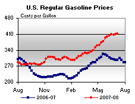 | 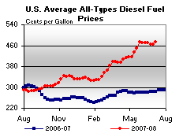 | ||||||
| Retail Data | Changes From | Retail Data | Changes From | ||||
| 07/07/08 | Week | Year | 07/07/08 | Week | Year | ||
| Gasoline | 411.4 | Diesel Fuel | 472.7 | ||||
| Spot Prices (Cents Per Gallon*) | |||||||||||||||||||||||||||||||||||
| 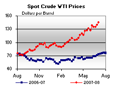 | 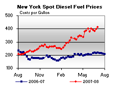 | ||||||||||||||||||||||||||||||||||
| 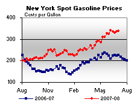 | 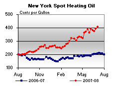 | ||||||||||||||||||||||||||||||||||
|
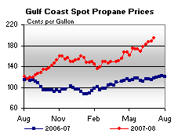 | ||||||||||||||||||||||||||||||||||
| *Note: Crude Oil WTI Price in Dollars per Barrel. | |||||||||||||||||||||||||||||||||||
| Stocks (Million Barrels) | |||||||
| 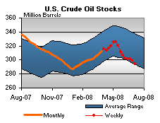 | 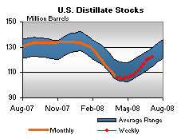 | ||||||
| 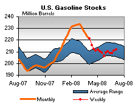 | 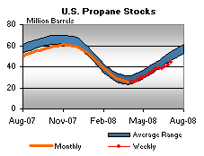 | ||||||
| Stocks Data | Changes From | Stocks Data | Changes From | ||||
| 07/04/08 | Week | Year | 07/04/08 | Week | Year | ||
| Crude Oil | 293.9 | Distillate | 122.5 | ||||
| Gasoline | 211.8 | Propane | 44.001 | ||||